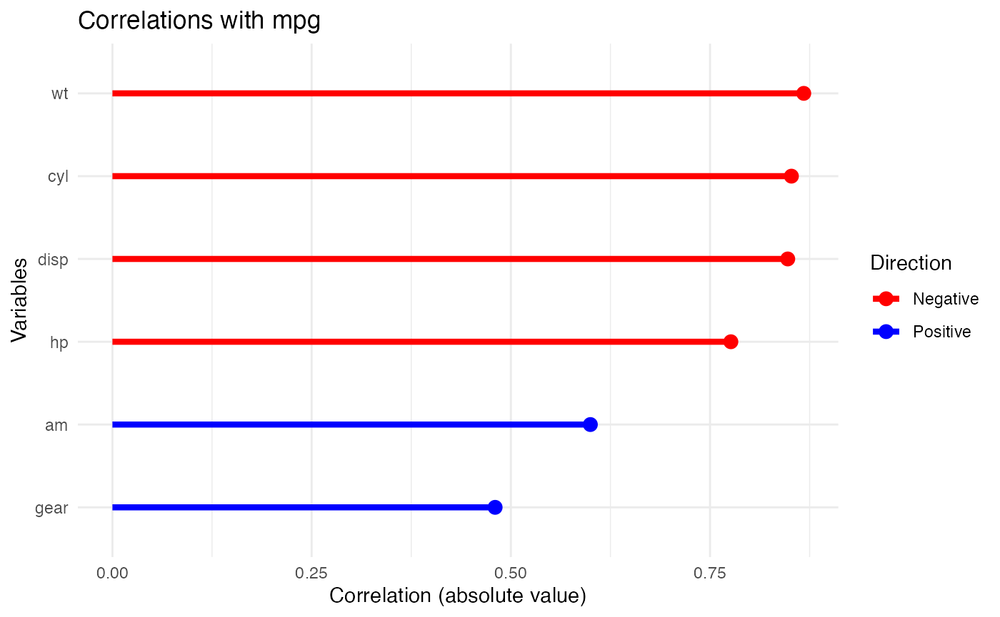

ryx.Rmd
#install.packages("remotes")
#remotes::install_github("https://github.com/aa-crown/ryx")
library(knitr)
library(ryx)The ryx package allows the user to print, summarize, and plot correlation values between a dependent variable y and one or more independent x variables. All correlation values are calculated using only base R functions like cor.test(), for(), and rbind().
The ryx function calculates the correlation values of the variables the user has specified. All non-numeric variables are skipped.
First, the function checks to make sure the variables specified are of class numeric and are in the data frame supplied.
Then, the function loops over the variables specified and calculates their correlation values using cor.test from base R.
It then creates a data frame with the variables, the r values, and p-values.
The function then calculates significance stars for each p-value and adds them as a column in the data frame.
Finally, ryx returns a list of the independent variable, dependent variables, and the data frame with the correlation results.
ryx <- function(data, y, x){
if(missing(x)){
x <- names(data)[sapply(data, class)=="numeric"]
x <- setdiff(x, y)
}
df <- data.frame()
for (var in x){
res <- cor.test(data[[y]], data[[var]])
df_temp <- data.frame(variable = var,
r = res$estimate,
p = res$p.value)
df <- rbind(df, df_temp)
df <- df[order(-abs(df$r)),]
}
df$sigif <- ifelse(df$p < .001, "***",
ifelse(df$p < .01, "**",
ifelse(df$p < .05, "*", " ")))
results <- list(y=y, x=x, df=df)
class(results) <- "ryx"
return(results)
}Once the ryx function is run, it will call the print.ryx
function to print a nice table of the resulting data frame.
x <- ryx(mtcars, y="mpg", x=c("hp", "wt", "disp", "cyl", "am", "gear"))
print(x)
#> Correlations of mpg with
#> variable r p sigif
#> wt -0.8676594 1.293959e-10 ***
#> cyl -0.8521620 6.112687e-10 ***
#> disp -0.8475514 9.380327e-10 ***
#> hp -0.7761684 1.787835e-07 ***
#> am 0.5998324 2.850207e-04 ***
#> gear 0.4802848 5.400948e-03 **Then, you can use the summary.ryx function to get a
verbalized summary of the results. The summary function
prints variables used, median absolute correlation value and range, and
how many significant variables were found.
This is how the summary.ryx calculates the median
absolute correlation value and ranges:
x <- ryx(mtcars, y="mpg", x=c("hp", "wt", "disp", "cyl", "am", "gear"))
#Compute the median absolute correlation
median_corr <- median(abs(x$df$r))
#Compute the range of absolute correlations
corr_range <- range(abs(x$df$r))Here is how you can call the summary.ryx function:
x <- ryx(mtcars, y="mpg", x=c("hp", "wt", "disp", "cyl", "am", "gear"))
summary(x)
#> Correlating mpg with wt cyl disp hp am gear
#> The median absolute correlation was 0.812 with a range from 0.48 to 0.868
#> 6 out of 6 variables were significant at the p < 0.05 level.Next, you can use the plot.ryx function to visualize the
results in a barbell plot, using ggplot2. The x-axis
will the the absolute value of the correlation values, with color
representing the direction of the correlation.

Now you can use the ryx package to calculate correlation values and get a nice print out, summary, and plot! Go you!